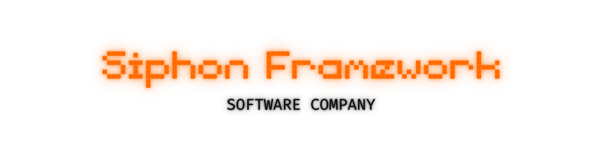

.
Tiny Giant is a lightweight, privacy-first web browser designed for total anonymity. It runs in permanent incognito mode—automatically clearing all history, cookies, cache, and downloads on exit. With multi-tab support, smooth navigation controls, and a clean, minimalist interface, it's perfect for users who value speed and privacy without compromise. No tracking. No traces. Just pure private browsing.
-
This software is 100% free
-